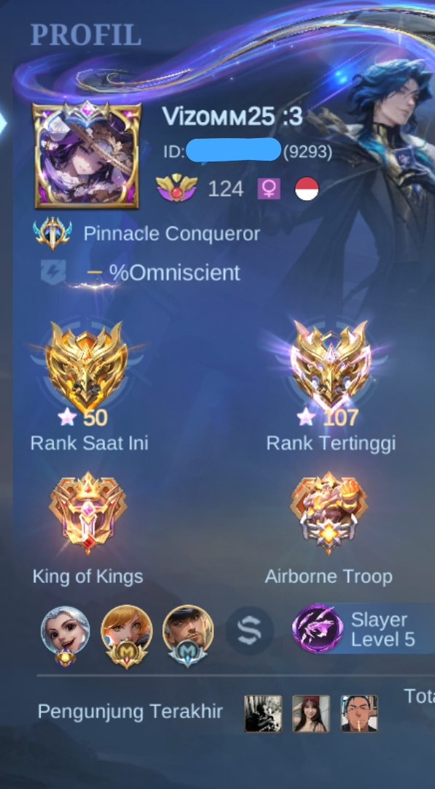
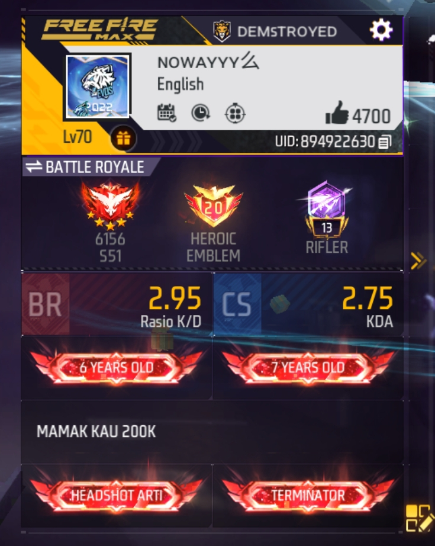

MUHAMMAD RAFLY NAZZER
Web Developer & Track Cycling Enthusiast
Hobi

Bersepeda (Fixed Gear)
tempat gw galau,menghilangkan stress,dan becerita.
Game Favorit

Mobile Legends
Minimal rank IMORTAL!!!!.

Genshin Impact
cinta sementara epep selamanya .
Musik Favorit
Judul Lagu - Nama Artis
Durasi: 0 / 30 detik